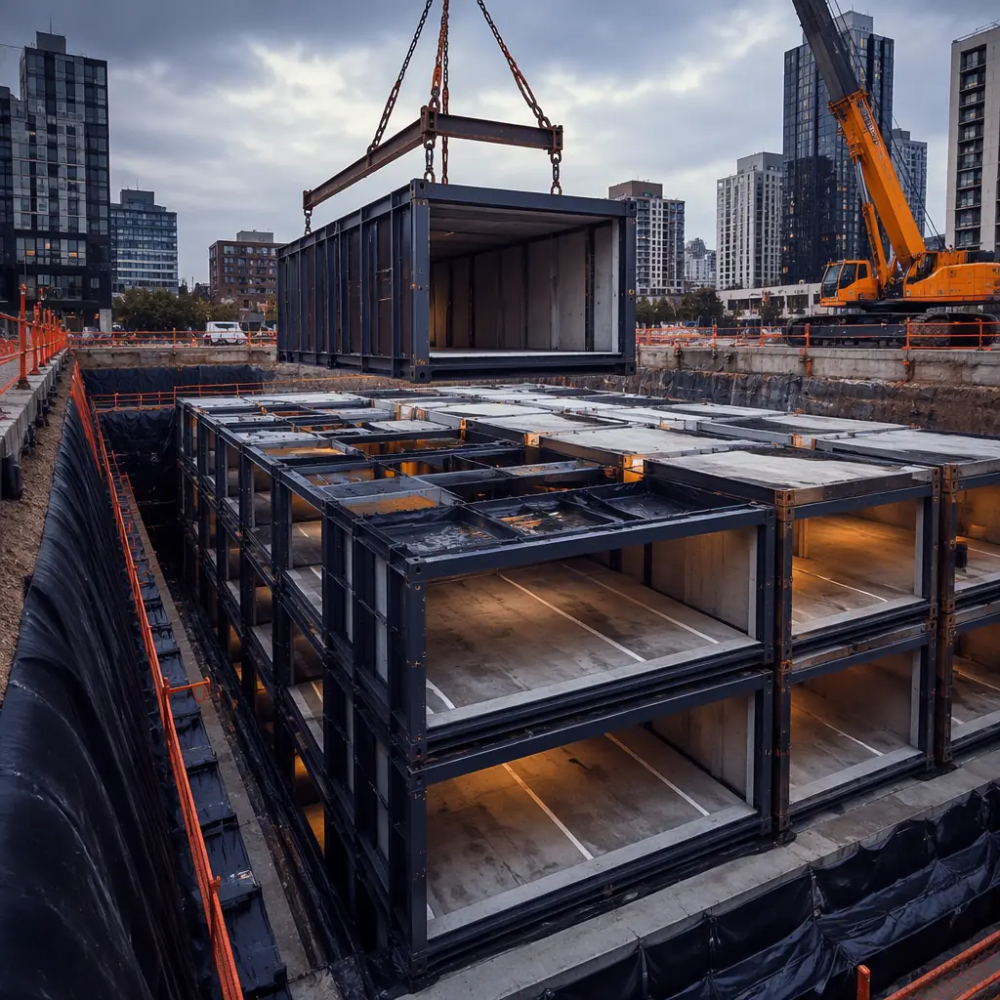
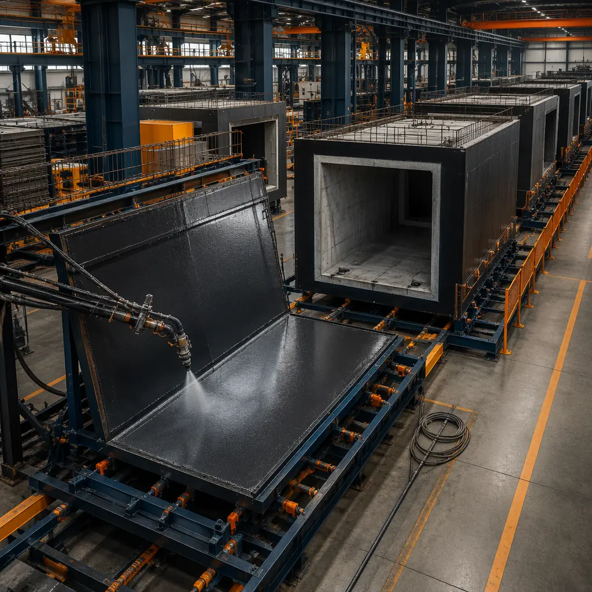
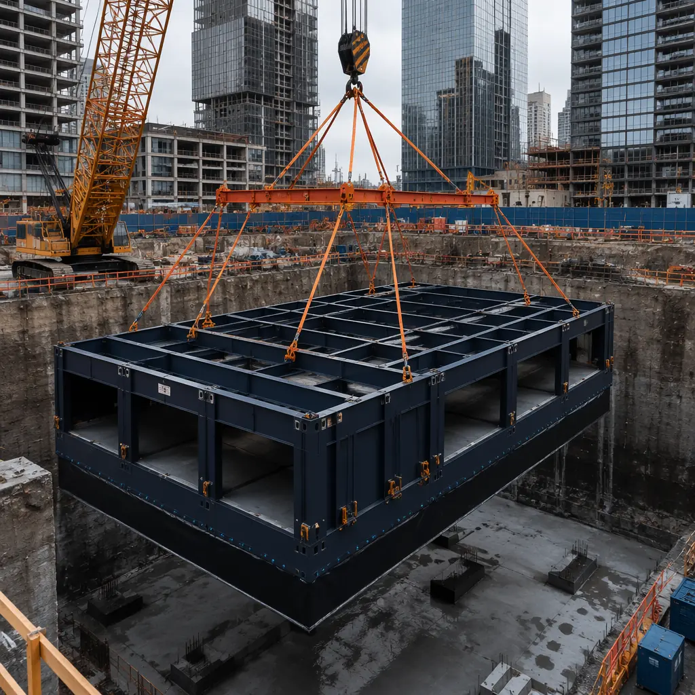
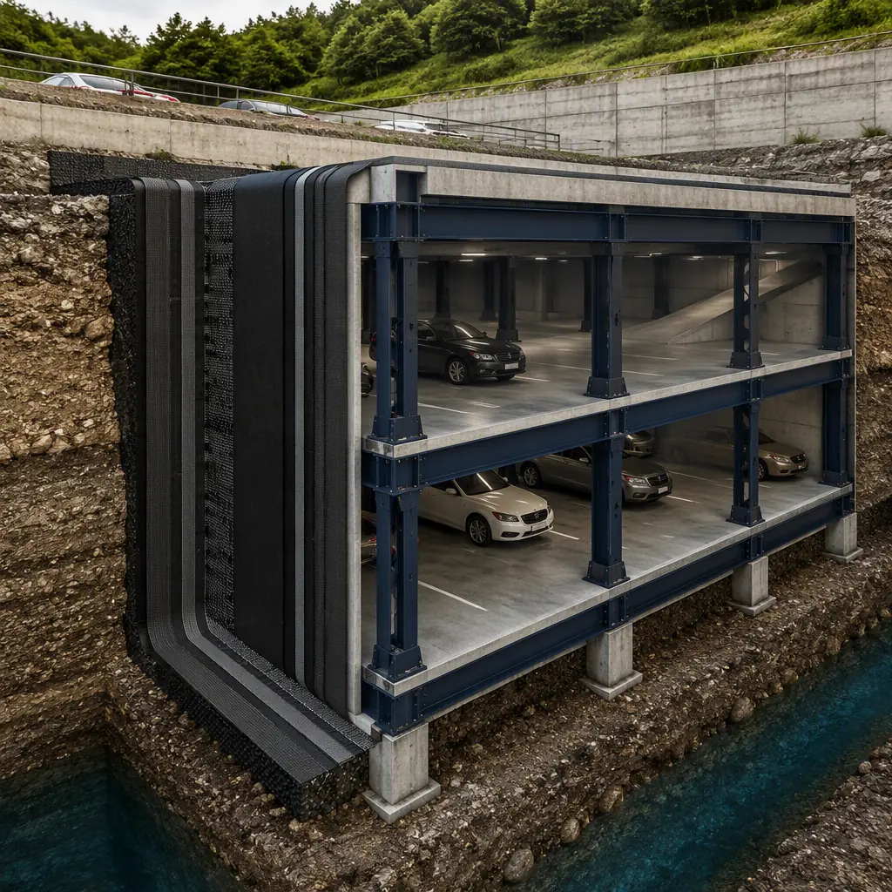
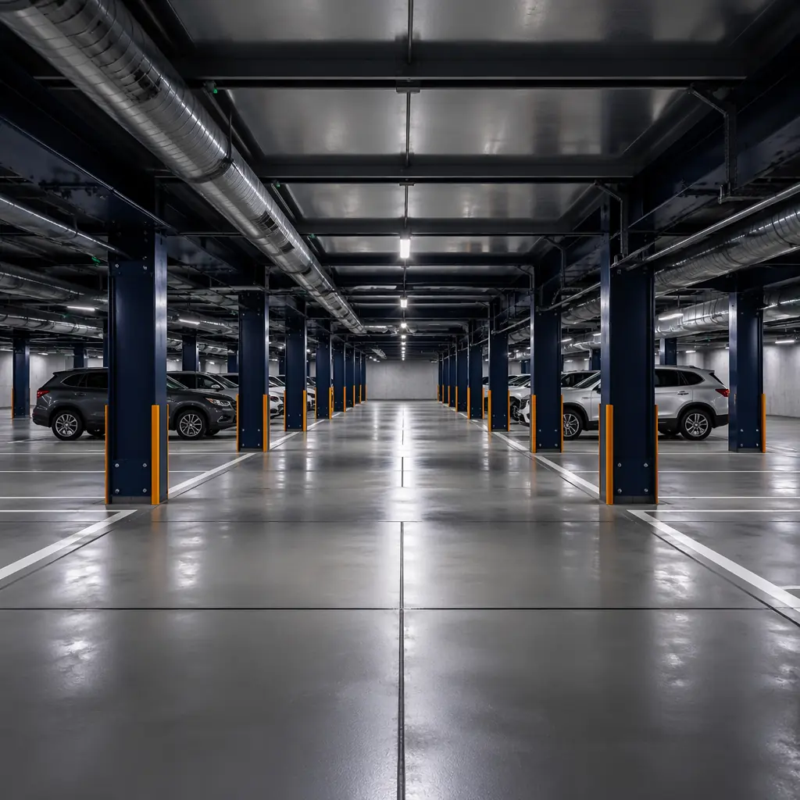

Building below grade is the most expensive, unpredictable, and schedule-destroying phase of any urban construction project. Excavation, shoring, waterproofing, and cast-in-place concrete work routinely consume 30–40% of a project's total timeline — and that's before a single above-ground floor is started. Modular underground construction flips this equation: factory-built steel-framed subterranean modules arrive on site with waterproofing, mechanical rough-ins, and structural connections pre-integrated, ready to be lowered into the excavation and connected in days rather than months. This article examines how modular below-grade construction works, which project types gain the most from it, the waterproofing and structural engineering requirements, and the cost comparison that every urban developer and general contractor needs to understand before their next basement excavation begins.

Why Underground Construction Needs Modular Methods
Conventional below-grade construction follows a rigid, linear sequence that cannot be accelerated: excavate, shore, pour footings, form and pour walls, strip forms, waterproof, backfill, repeat for each level. Every step depends on the previous step finishing — and every step is exposed to weather, groundwater, and soil conditions that no geotechnical report can fully predict. Three specific pain points make modular methods compelling:
Weather exposure risk. An open excavation is a hole that fills with water every time it rains. Dewatering pumps run continuously for months, adding $50,000–$150,000 to the cost of a typical urban basement project. More critically, rain events stop work — a single week of heavy rain can push a cast-in-place concrete schedule back two weeks once pumping, cleaning, and re-inspection are factored in. Modular below-grade construction minimizes open-excavation time: modules arrive waterproofed from the factory, and the excavation is open only for the few days it takes to set and connect them. A coastal flood-resistant project using modular methods reduced open-excavation exposure from 14 weeks to 8 days.
Waterproofing integrity. Site-applied waterproofing — whether fluid-applied membrane, sheet membrane, or bentonite — is only as good as the applicator's work on the day it was applied. Wrinkles, pinhole voids, and poorly lapped seams are common defects that manifest years later as leaks. Modular factory production applies waterproofing under controlled conditions: spray-applied polyurea or torch-on modified bitumen membranes are installed on wall panels horizontally on a factory jig, with every square inch inspected under bright lighting before the module leaves the factory floor. The result is a waterproofing envelope with defect rates measured in parts per thousand rather than the percentage rates typical of field application.
Urban site logistics. A downtown excavation generates 200–400 truckloads of spoils that must leave the site and 150–300 truckloads of concrete, rebar, and formwork that must enter — all through a single access point on a congested city street. The logistics cost of conventional below-grade construction in Manhattan, central London, or downtown Singapore can exceed $200 per square foot of basement area. Modular underground construction replaces the continuous stream of material deliveries with a discrete number of module deliveries — typically 8–12 modules per day, delivered on flatbed trucks with precisely scheduled crane picks. The 40% timeline compression this enables translates directly into reduced general conditions costs, crane rental fees, and traffic management expenses.

Project Types That Gain the Most from Modular Underground Construction
Not every below-grade structure is a candidate for modular methods — shallow, geometrically simple basements under single-family homes will never justify factory production. But four project types gain disproportionate value from the approach:
Multi-level underground parking structures. Urban developers who need 2–4 levels of below-grade parking face a construction sequence that typically takes 8–14 months for a cast-in-place concrete garage. Modular parking modules — steel-framed bays 8.5m wide by 16m long, double-height for vehicle clearance, with pre-installed mechanical ventilation ductwork, sprinkler mains, and lighting conduit — can be set at a rate of 6–8 modules per day. A 300-space underground garage (approximately 40 modules on 2 levels) can be structurally complete in 10 working days after excavation is finished, versus 14–20 weeks for cast-in-place. The numbers are compelling: a 120,000 sq ft underground parking structure in Chicago was delivered for $78/sq ft using modular methods versus $112/sq ft conventional — a 30% cost reduction driven mainly by 11 fewer weeks of crane rental, site supervision, and traffic control.
Data center sublevels and utility vaults. Hyperscale and colocation data centers increasingly locate critical infrastructure below grade: fuel storage for backup generators, chilled water pipe galleries, electrical switchgear rooms, and secure cable vaults. These spaces share a common requirement — absolute waterproofing integrity, since even minor water ingress threatens millions of dollars in electrical equipment. Modular utility vaults built with the same factory-controlled waterproofing process as modular cold storage facilities deliver guaranteed dry interiors. A Tier IV colocation provider in Northern Virginia deployed 12 modular below-grade electrical vaults in 6 weeks — a schedule that would have required 18–22 weeks of cast-in-place construction with multiple waterproofing subcontractor mobilizations.
Mixed-use podium basements. The typical urban mixed-use project — retail at grade, 4–6 floors of offices above, 2–3 levels of underground parking — spends 30–40% of its total construction timeline on the below-grade portion before the revenue-generating above-grade floors begin. Modular podium construction compresses the below-grade schedule sufficiently to bring the entire project's revenue start date forward by 4–8 months. For a 200,000 sq ft mixed-use building generating $35/sq ft in annual office rent, 6 months of earlier occupancy translates to $3.5 million in additional revenue — more than the entire below-grade construction budget in many markets.
Underground transit and infrastructure facilities. Subway ventilation shafts, underground electrical substations, and pedestrian tunnel segments are inherently modular in geometry — rectangular boxes with specific dimensional constraints — yet are almost always built with cast-in-place methods that close traffic lanes for months. Modular infrastructure boxes can be fabricated offsite, delivered during weekend track or road closures, and lowered into position in hours. Transport for London's Bank Station capacity upgrade used 14 factory-built modular tunnel sections to add pedestrian capacity without extending the street-level construction footprint beyond 72 hours of partial road closure — a scheme that would have required 8 months of lane closures with conventional methods.

Structural Engineering Considerations for Below-Grade Modules
Underground modules face load conditions that above-grade modules do not: lateral earth pressure, hydrostatic uplift, and concentrated loads from vehicle traffic on the lid slab. Engineering these modules requires a different structural approach than standard above-grade modular construction:
Lateral earth pressure resistance. A module wall buried 10m below grade experiences approximately 5,000–8,000 kg per linear meter of lateral soil pressure (active earth pressure at 18 kN/m³ soil density, K₀ = 0.5). Steel-framed modules resist this through a combination of moment-resisting frame action and horizontal diaphragm action from the factory-installed floor and ceiling panels. The module's steel frame is designed as a rigid box — top and bottom chords connected by diagonal bracing in each wall plane — such that lateral earth loads are transferred to the floor and roof diaphragms, which distribute them to the module corners where vertical columns carry the load to the foundation. Computational analysis using the soil-structure interaction module in ETABS or SAP2000 confirms that a properly detailed module frame can resist the full design lateral earth pressure without relying on the adjacent modules for lateral support — each module is structurally independent during the installation sequence, when only one side may be backfilled.
Hydrostatic uplift prevention. Below-grade structures in areas with high groundwater must resist uplift forces that can exceed the dead load of the structure by a factor of 2–3. Modular underground construction addresses uplift through two mechanisms. First, the module's floor slab is cast with integral deadman anchors — steel embedments that connect to tension piles or rock anchors drilled through sleeves in the module floor after placement. Second, the module-to-module connection system is designed to transfer tension, so the entire modular basement acts as a monolithic mass resisting uplift rather than individual modules fighting buoyancy independently. A properly engineered foundation system is the prerequisite — the module is only as stable as the foundation it sits on.
Joint waterproofing between modules. The critical detail in modular underground construction is the joint between adjacent modules — the plane where water, if it penetrates, will enter the interior. The joint system uses three lines of defense: an exterior hydrophilic strip that expands on contact with water (applied in the factory to the module's exterior face, compressing against the adjacent module's strip during installation), an interior compression gasket set into a recessed channel along the module edge, and a post-installation injection port system that allows epoxy or polyurethane grout injection if any leak develops — though properly installed joints rarely require this. Independent testing by the British Geotechnical Association confirmed that a three-barrier modular joint system maintained watertightness at hydrostatic heads exceeding 15m, equivalent to 1.5x the design head of most urban basements.

Cost Comparison: Modular Underground vs Cast-in-Place
Cost is the question developers ask first — and the answer depends on depth, soil conditions, and module count. The comparison below uses benchmark data from three completed modular underground projects (Chicago parking garage, London mixed-use podium, Singapore utility vault) normalized to 2026 US dollars per square foot of below-grade floor area:
| Cost Element | Cast-in-Place ($/sq ft) | Modular ($/sq ft) | Δ |
|---|---|---|---|
| Excavation & shoring | $28–42 | $28–42 | Same |
| Structure (walls, columns, slabs) | $45–65 | $38–52 | -15–20% |
| Waterproofing | $8–14 | $5–8 | -35–40% |
| MEP rough-ins | $12–18 | $8–12 | -30–35% |
| General conditions (crane, supervision, temp facilities) | $18–28 | $10–16 | -40–45% |
| Total per sq ft | $111–167 | $89–130 | -20–22% |
The 20–22% hard cost reduction is significant, but the soft-cost savings — earlier occupancy, reduced construction loan interest, and lower general conditions duration — typically exceed the hard-cost savings by a factor of 1.5–2x. For a developer carrying a $30 million construction loan at 7.5%, every month of schedule compression saves approximately $187,500 in interest alone. When modular underground construction compresses the below-grade schedule by 12–16 weeks, the interest savings alone can reach $500,000–$750,000 — enough to fund the entire waterproofing budget.

Developer's Checklist: Is Your Project a Candidate?
Not every below-grade project justifies modular methods. Run through these six questions to determine whether modular underground construction fits your project:
- Are you building 2+ below-grade levels? Single-level basements rarely justify the module fabrication and transport cost. The crossover point is typically 2 levels — the deeper you go, the stronger the modular advantage becomes.
- Is the site in a dense urban area with constrained access? The more difficult your site logistics — narrow streets, limited laydown, noise restrictions, traffic management costs — the more valuable the 40% reduction in material deliveries becomes.
- Is the groundwater table within 3m of your bottom-of-excavation? High groundwater makes waterproofing integrity the dominant cost driver. Modular factory-applied waterproofing systems deliver reliability that field application cannot match under wet conditions.
- Are you building repetitive below-grade spaces? Parking bays, utility rooms, storage vaults, and tunnel segments — spaces with repeating dimensions — are ideal candidates. Irregularly shaped spaces with multiple offsets and level changes are less suited to modularization.
- Is your construction loan interest rate above 6%? The higher your cost of capital, the more valuable schedule compression becomes. At 8%+, the interest savings from 3–4 months of schedule compression can exceed the entire modular premium.
- Can modules be delivered to the site on flatbed trailers? Module dimensions of 3.0m wide by 12–16m long by 3.5–4.0m high are within standard highway transport limits in most countries. Sites with overhead obstructions (low bridges, tunnels on the delivery route) require a route survey before committing to modular delivery.
If you answered yes to 4 or more of these questions, modular underground construction is likely the faster, cheaper, and lower-risk option for your below-grade construction. The engineering is proven, the waterproofing is more reliable, and the schedule compression is not theoretical — it has been demonstrated on projects from Chicago to Singapore. The question is not whether modular underground construction works, but whether your next project can afford to build below grade the old way. For a detailed feasibility assessment specific to your project, download our partner evaluation framework and run through the site-specific criteria before issuing your next RFP. The economics of below-grade construction have changed — your procurement strategy should reflect that.